Continuous
Integration
Delivery
Deployment
Created by Viktor Farcic for Technology Conversations / @vfarcic

Why should we care about Continuous Integration, Delivery or Deployment?
Why should we care about Continuous Integration, Delivery or Deployment?
Because it is modern?
Why should we care about Continuous Integration, Delivery or Deployment?
Because it is popular?

Why should we care about Continuous Integration, Delivery or Deployment?
Because everybody talks about it?

Why should we care about Continuous Integration, Delivery or Deployment?
We should care because...
- Earlier feedback to business
- Faster development
- Fewer merge conflicts
- Lower deployment risk
- Changes done faster (no need to wait for release)

What is continuous delivery?
Continuous Delivery is like sex in high school: everyone talks about it, everyone claims they're doing it, but hardly anyone is.
What is continuous delivery?
Continuous Delivery is a software development discipline where you build software in such a way that the software can be released to production at any time.Martin Fowler

You’re doing continuous delivery when...
- Your software is deployable throughout its life-cycle
- Your team prioritizes keeping the software deployable
- Anybody can get fast, automated feedback on the production readiness
- You can perform push-button deployments
Continuous...
- Continuous Deployment
- Continuous Delivery
- Continuous Integration
Tools


Environment Setup Tools


Build Tools
- bash / ksh / windows shell
-

-

-

Methodologies
- Unit testing
- Test-driven development
- Behaviour-driven development
Flow
- Checkout the code
- Static Analysis
- Unit Tests
- Packaging
- Deployment to Test Environment
- Functional / Integration Tests
- Code Coverage
- Deployment to Production
Deployment
- Often
- Automatic
- Fast
- Zero downtime
- Ability to roll back
Deployment
Mutable Monster Server
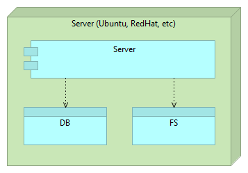
Deployment
Immutable Server
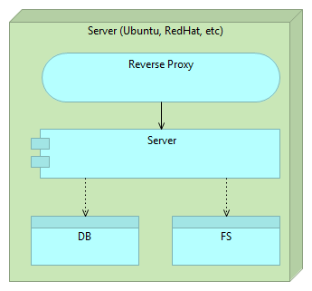
Deployment
Immutable Server
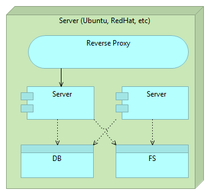
Deployment
Immutable Server
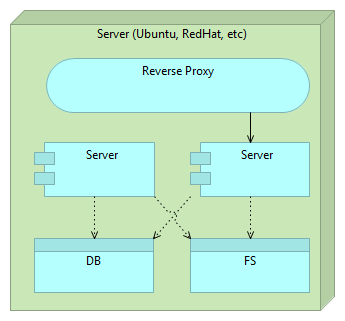
Deployment
Immutable Server
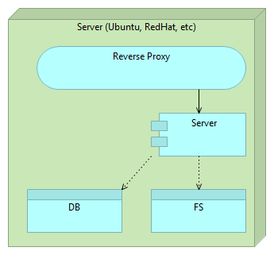
Deployment
Immutable Micro Services
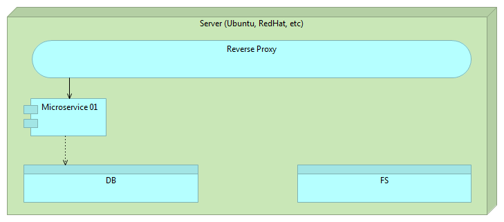
Deployment
Immutable Micro Services
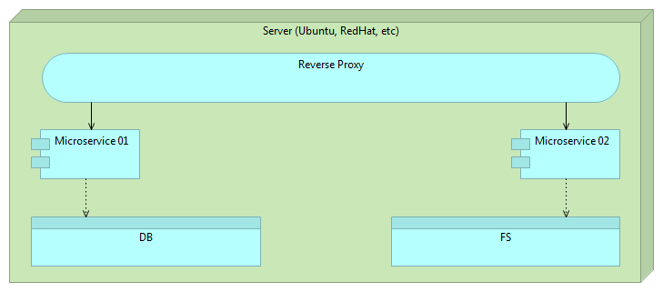
Deployment
Immutable Micro Services
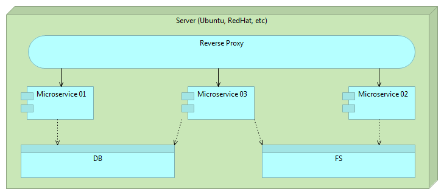
Deployment
Immutable Micro Services
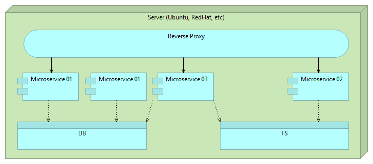
Deployment
Immutable Micro Services
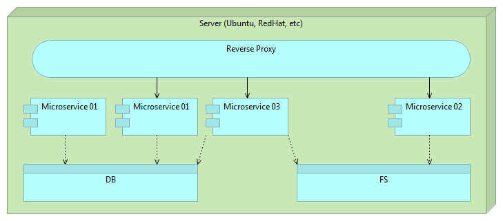
Deployment
Immutable Micro Services
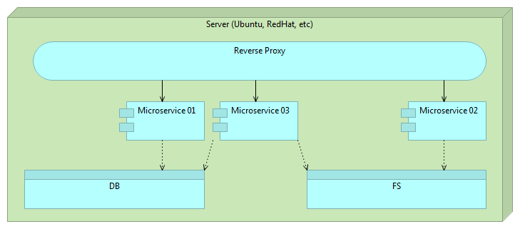
Deployment
Immutable Micro Services Details
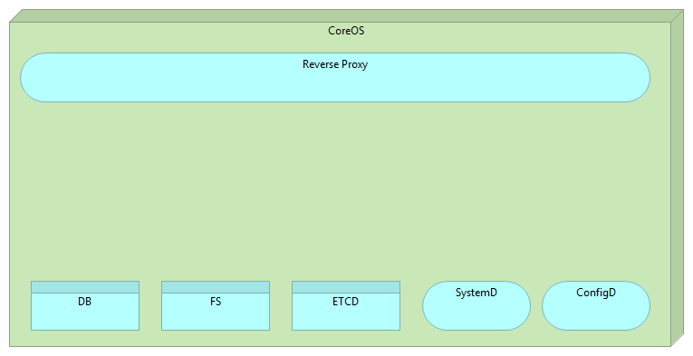
Deployment
Immutable Micro Services Details
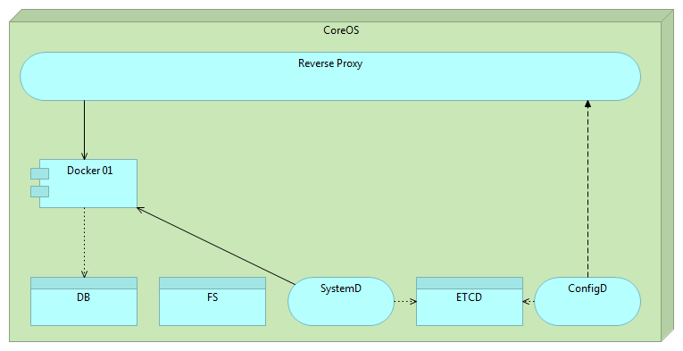
Deployment
Immutable Micro Services Details
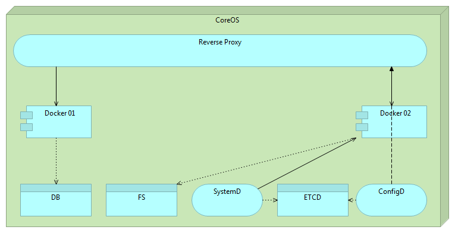
Deployment
Immutable Micro Services Details
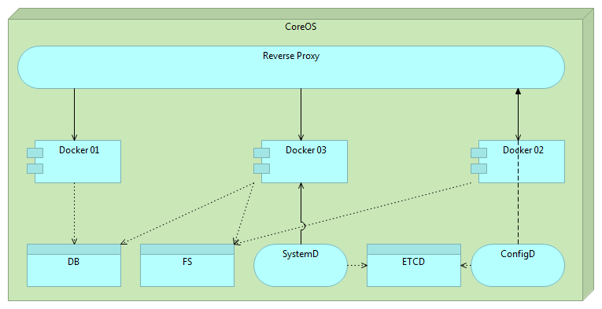
Deployment
Immutable Micro Services Details